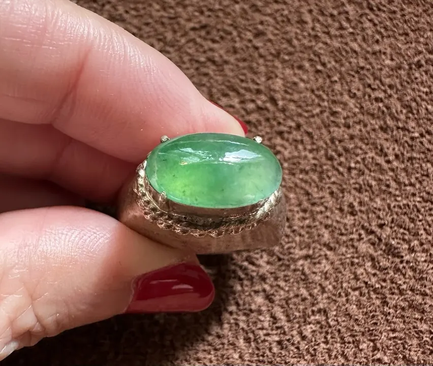

緬甸翡翠：老坑與新坑的傳說
緬甸三個字，是翡翠世界的「茅臺」——老坑與新坑的傳說，藏著種水差異的地質真相。

核心定義
緬甸是全球高品質翡翠的核心產地：市面上絕大多數高檔翡翠（尤其滿綠玻璃種）出自緬甸。緬甸翡翠主產區位於北部（如帕敢、隆肯、抹谷等地），礦床分「原生礦」（山料，硬岩中開採）與「次生礦」（水料，河床礫石中揀選）。
「老坑」與「新坑」是市場術語：老坑（老種）指結晶細密、種水好的料，多出自次生礦（經歷河水搬運篩選，品質較佳者留存）；新坑（新種）指結構粗糙、種水差的料，多為原生礦直接開採——坑口是品質的統計暗示，不是保證。
特徵與分類
| 類型 | 來源 | 特徵 |
|---|---|---|
| 老坑（老種） | 次生礦/河床 | 種水好、結晶細密 |
| 新坑（新種） | 原生礦/山體 | 質地粗、種水差 |
| 蒙頭料 | 礫石外殼 | 賭石風險 |
| 明料 | 去皮見色 | 風險較低 |
老坑料的品質優勢是「統計性的」：次生礦在河床搬運中，疏鬆的部分被磨蝕淘汰，留存者結晶細密、種水佳——所以老坑盛產好料，但不是每塊都好；新坑也偶有佳品。
科學原理
翡翠的地質成因：高壓低溫變質作用（俯衝帶環境）下，鈉鋁矽酸鹽結晶成硬玉——緬甸位於板塊碰撞帶，地質條件恰好適合。次生礦（水料）經河流搬運，疏鬆者磨蝕、堅密者留存——這是老坑種水好的物理篩選。
緬甸翡翠的顏色機制：鉻致色（帝王綠）與鐵致色（暗綠）並存，鉻含量與分布決定綠的濃豔——緬甸地質條件（鉻源充足）正是帝王綠的搖籃。
鑑定與鑑別方法
- 看種水：老坑種水好（透、細、起瑩）
- 看結構：老坑晶粒細密
- 查產地敘事：緬甸 vs 瓜地馬拉等新產地
- 對照權威產地報告
- 記住：坑口是暗示，品質看實物
市場行情與保養建議
行情上，「緬甸老坑」是翡翠市場的最高敘事：頂級老坑玻璃種帝王綠，價格以每克拉萬元人民幣計。近年瓜地馬拉翡翠等新產地崛起，顏色相近但價格親民——產地溢價與品質的平衡，考驗買家眼光。
提醒：市場上「老坑」兩字泛濫——真正的老坑料必有種水支撐；種水不到位，掛再多名稱也是空談。先看種水，再聽故事。
常見誤區
緬甸是高品質翡翠的主要來源，但品質分布也參差——頂級瓜地馬拉翡翠可與緬甸媲美。產地是統計，不是保證。
老坑講的是「結晶結構與種水」，不是開採時間——現代開採的老坑料與百年前開採的，一樣是老坑。
冷知識
原石包著風化外殼（蒙頭料），內部品質不可見——「一刀窮一刀富」的賭石傳統，是翡翠市場的極致風險美學。
緬甸翡翠在明清之際才大規模傳入中國——比起和田玉的八千年文化，翡翠是「新貴」。
反直覺觀點
疏鬆的翡翠在河床搬運中磨掉了，留下的都是結晶細密的「美人」——老坑的種水，是大自然用千萬年做的品質篩選。
緬甸產地溢價高，偽稱緬甸者眾——同樣品質，產地敘事能讓價格翻倍。買翡翠，先看種水色，再信產地。